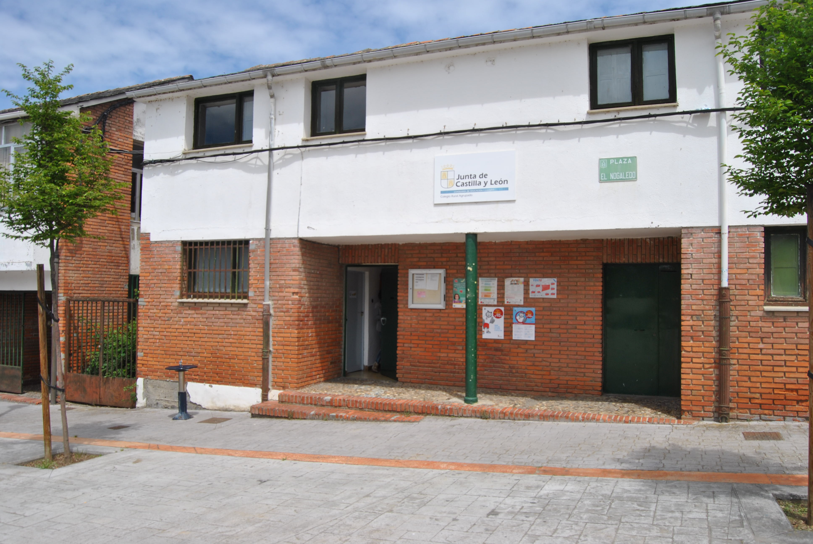
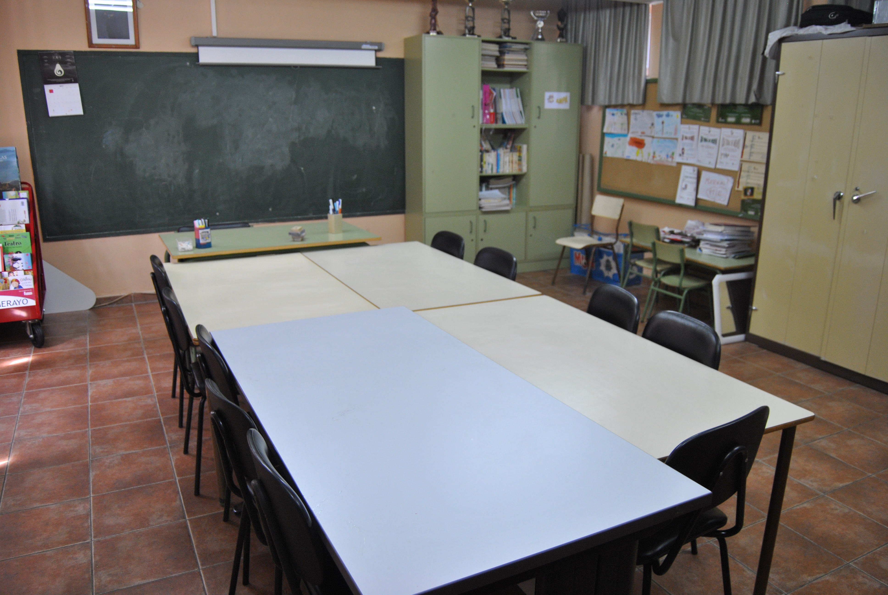
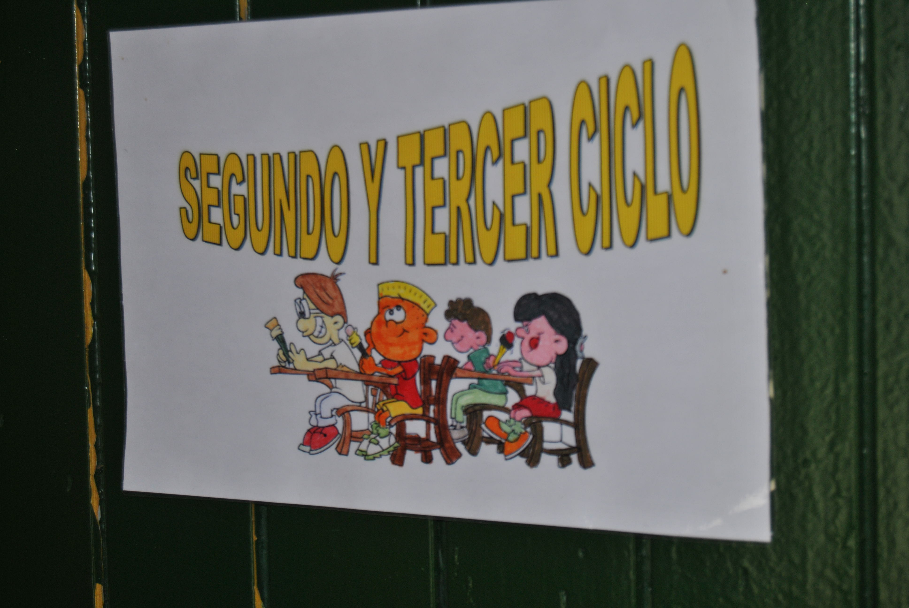

Los alumnos del Colegio Rural Agrupado (CRA) Toral de Merayo no tienen patio. El lugar al que van a media mañana es la misma plaza del pueblo donde su abuelo está tomando un café, donde a una señora se le escapa el perro o donde una madre juega con su bebé. La vida escolar está integrada en la vida social, nada cambia al entrar en el colegio.
La directora de este CRA en la comarca de El Bierzo (León), Mª Mercedes Aza Souto, cuenta que cuando ha estado en colegios convencionales ha sido duro ver cómo los niños más pequeños pasan las primeras semanas de escolarización llorando porque no quieren estar en el colegio o no conocen el entorno. “Esto aquí no pasa, se conocen antes jugando en el parque o en la plaza y les gusta ir a la escuela”.
Los Colegios Rurales Agrupados (CRA) son desconocidos para una gran parte de la población. Muchos padres matriculan a sus hijos en las escuelas del pueblo pensando que se trata de una escuela más y algunos profesores opositores piden plaza en los mismos sin tener idea de cómo funcionan.
“Al principio es muy difícil, los alumnos se reían de mí cuando leía los primeros cuento”, no es fácil entender cómo contar una misma historia para todos cuando son alumnos de edades tan diferentes. Como en todas las profesiones, “nadie te enseña y solo se aprende trabajando”, indica. En este caso se trata de desaprender la rigidez de los centros educativos convencionales y naturalizar la cercanía de alumnos, familias y vecinos.
Explica que “un colegio habitual es siempre mucho más impersonal, hay que poner normas y las cosas suelen estar más programadas”. Las tutorías son como las citas del médico, de quince minutos, mientras que en los CRA todo es más espontáneo: “Intento formalizarlo y que se respeten mis horarios de clase, pero si un padre pasa por aquí y me quiere comentar algo, salgo un momento y lo hablamos”.
A ella también le gusta ir al colegio. No solo los alumnos son unos privilegiados, los docentes también. Al contrario de la situación de desbordamiento que sufren los profesionales de la educación en la mayoría de centros educativos, los de los CRA disfrutan de la oportunidad de prestar una atención personalizada a cada uno de sus alumnos. Se ve claro en el momento de reservar las excursiones de fin de curso o las actividades culturales: “Al llamar a los sitios a veces me da vergüenza, digo que somos 43 niños y 11 profesores y, ¿a cuántos tocamos?”.
“Los pasillos del CRA son las carreteras”
Sin embargo, matiza que no siempre es así. Un CRA lo compone una plantilla fija de docentes fijos y otra de itinerantes , que son los grandes perjudicados. “Los pasillos del CRA son las carreteras”, le dijo una vez en una ocasión un inspector de la Junta de Castilla y León, “y es verdad”, añade. Imparten asignaturas como música o inglés, y se pasan el día haciendo kilómetros de pueblo a pueblo. Este tipo de profesores dan clases por todas las localidades que pertenecen al CRA por lo que pasan pocas horas con los alumnos, “no tienen arraigo y se acaban cansando”.
Mayor atención y más autonomía
Dentro del aula, Mercedes también destaca las ventajas de estudiar en un centro rural. Sostiene que los niños están mucho más atendidos, tienen más espacio y “no había casi juegos, los folios estaban contados y no se podía ni mover una silla porque eran tantos...”
Al cruzar la puerta del aula de primer ciclo lo primero que llama la atención es cómo están distribuidos los niños. Están trabajando por edades, divididos en diferentes rincones dentro de la clase. Sonríen, leen, son autónomos. La profesora se detiene a hablar con la directora y, mientras tanto, uno de los alumnos de más edad corrige al pequeño. “Si están haciendo la fila y los más pequeños no saben ponerse el abrigo o quitárselo enseguida el más mayor se acerca, sin que le hayas dicho nada, y le ayuda”. Lo mismo pasa cuando hacen algo mal, antes que la profesora, es su compañero de más edad el que le corrige o le recrimina y esto “tiene mucho más efecto que lo que pueda decirle una profesora”, asegura la directora.
Muchas veces esta fraternidad cuesta entenderla. Mercedes cuenta cómo en una ocasión llegó al CRA un alumno de sexto que tenía que repetir curso. Acostumbrado a pasar desapercibido en el aula, le costó acostumbrarse a ser protagonista. “El resto de los niños veían como una locura que no hiciese los deberes, ellos saben que en el CRA a todos se les pregunta al menos una vez al día de todas las asignaturas que toquen”.
Los alumnos de diferentes cursos y edades trabajan juntos pero separados. Están en el mismo aula y las explicaciones son comunes, pero lo que se le pide a cada uno de ellos es diferente. “Cada niño va a tener su libro, el de su curso, pero hay muchas cosas que las van a dar todos y cada uno llegará hasta donde pueda”. Ilustra esta metodología con un ejemplo en la clase de Lengua Castellana: “Si el de tercero de primaria tiene que dar el nombre, el de cuarto el nombre y el verbo, y el de quinto el nombre, verbo y adjetivo, yo lo explico todo para todos”. Después cada uno hace los ejercicios que le corresponde. Así, cuando el alumno de tercero llega a quinto “ya se lo sabe porque lo vienen oyendo desde hace dos cursos”.
La directora mantiene que los aspectos positivos de estudiar en un CRA son muchos, pero que “a veces es difícil transmitir estas ventajas a los padres”. Ellos prefieren llevar a sus hijos a colegios de ciudades cercanas como Ponferrada. A veces la razón es el horario porque este tipo de colegios ofrecen clases de madrugadores -desde las ocho de la mañana- hasta extraescolares por la tarde. “Me asombro porque prefieren llevar a sus hijos a un concertado, con todos los gastos que eso conlleva, con aulas de 30 alumnos a rebosar, cuando los profesores son los mismos que en un CRA”, critica. Cuando se busca una explicación, Aza opina que el motivo solo puede ser “demostrar un estatus social”.
La escasez de alumnos en los CRA es una constante. Cada año la lucha por conseguir matriculaciones se repite: “En muchos pueblos ya no hay niños y los nuevos habitantes de la zona se van a Ponferrada o a ciudades importantes, lo que pone en riesgo la supervivencia de los CRA”.